Renaissance Learning · Dec 2025 – present
AI Teacher Studio
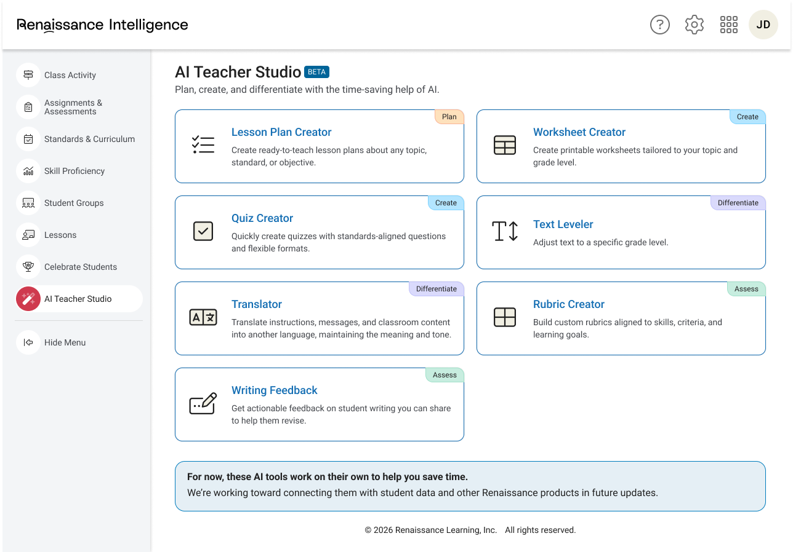
📷 Hero — hub con las 7 tools'" />AI Teacher Studio inside Renaissance Intelligence — seven tools organized by workflow: Plan, Create, Differentiate, and Assess.
Overview
Renaissance Learning needed a way to give K-12 teachers access to AI-powered tools for their daily work — planning lessons, creating materials, differentiating content, and assessing students. Teachers were already using tools like ChatGPT and MagicSchool, but those were generic and disconnected from what they already knew about their students.
The long-term vision was ambitious: a hub that could eventually leverage Renaissance's years of student assessment data across Star, Nearpod, and Freckle to deliver personalized outputs that no competitor could replicate. For the MVP, the goal was more immediate — ship a suite of high-quality, easy-to-use standalone tools fast, learn from real teachers using them, and build the foundation for that future integration.
I was the sole designer on AI Teacher Studio from kickoff through launch and ongoing iterations. Working with a PM, engineering team, UX researcher, and UX writer, we went from zero to a shipped product in five weeks — seven tools live in production, with more in progress.
The problem
Teachers are overwhelmed and time-poor. Research interviews with 18 K-12 teachers confirmed what we suspected: they use AI daily, but the tools they reach for most aren't purpose-built for education. And when tools feel complex or produce output that needs significant rework before it's classroom-ready, teachers abandon them immediately.
Three things kill adoption: interfaces that feel overwhelming, outputs that require too much reformatting, and anything that doesn't actually save time. Those three constraints shaped every design decision we made.
Process
With five weeks to ship, I had to move fast and be strategic about where I spent time. The first thing I did was audit what we actually needed to design. Seven tools sounds like seven separate projects — but most of them shared the same structure: a header, a form with inputs, a generation state, and an output panel. I mapped what was common across all tools and what varied, then designed a reusable template that could scale to the full suite without starting from scratch each time.
Before touching any UI, I did an exhaustive competitive analysis of MagicSchool, SchoolAI, HMH, Pear Start, Khanmigo, and Brisk — full flows, not just screenshots. That analysis fed directly into decisions about form layout, output formatting, and how to handle edge cases.
Competitive analysis — five EdTech AI tools
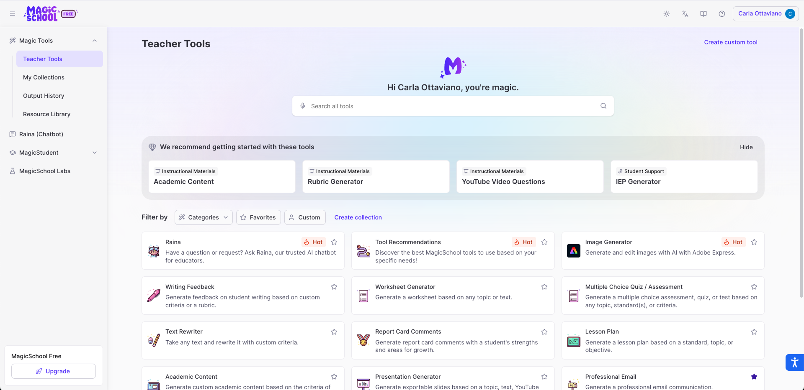
📷 MagicSchool'" />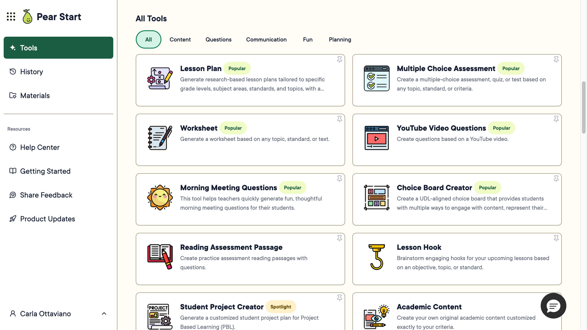
📷 Pear Start'" />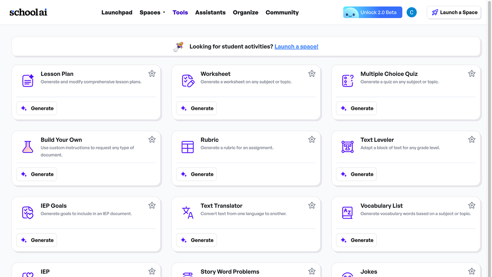
📷'" />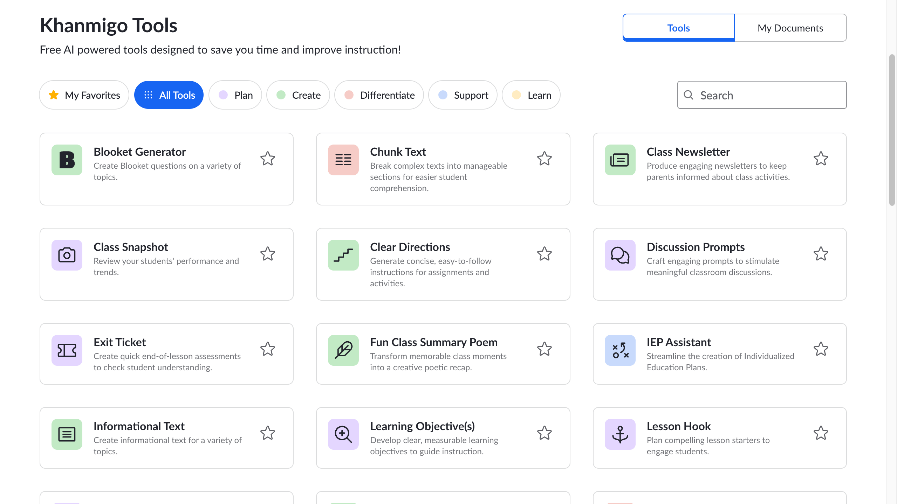
📷'" />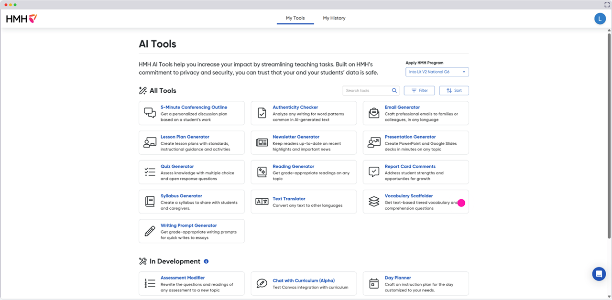
📷'" />Full flows, not just screenshots — I analyzed navigation, input patterns, output formatting, and error states across all five tools.
I ran crazy 8 sketches on paper, moved to wireframes quickly, and pulled in feedback early — from the design team, PM, and engineers — before anything was final. I presented in design critiques regularly, because with this timeline I needed every round of feedback I could get.
One decision that saved significant time: I designed the Text Leveler first end-to-end, then used it as the reference for handoff while continuing to design the remaining tools in parallel. Engineers could start building foundations without waiting for all seven tools to be complete.
From sketch to final — the hub evolution
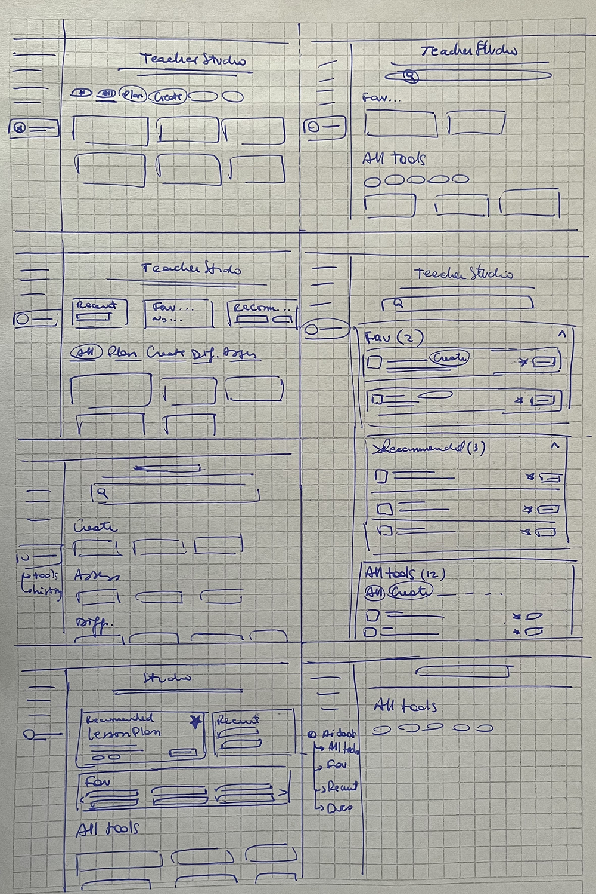
📷 Sketches'" />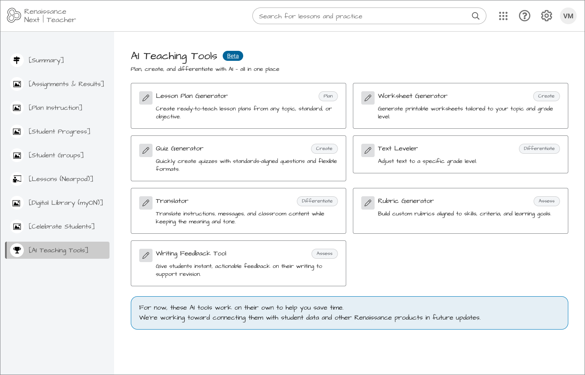
📷 Wireframe digital'" />Paper sketches exploring different hub layouts → digital wireframe in Figma → shipped product.
From form to output — the reusable tool template
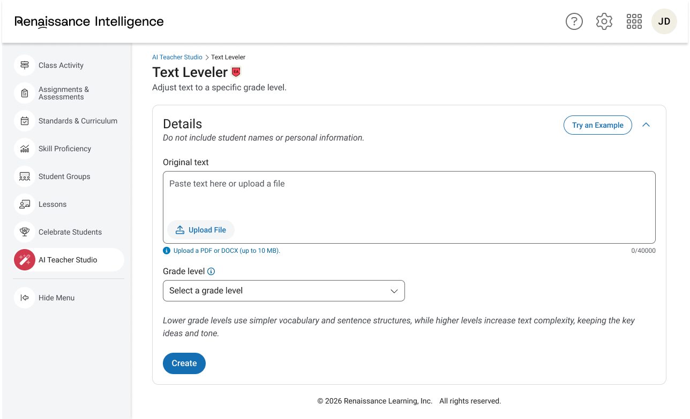
📷 Tool form'" />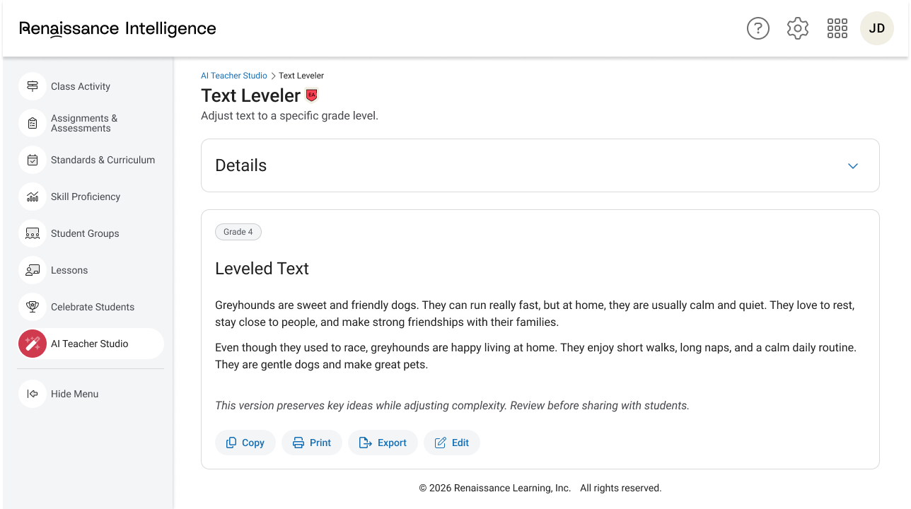
📷 Tool output'" />Text Leveler — form and output. The same layout structure works across all seven tools.

The full flow in Figma — all states, edge cases, error messages, and decision points mapped out before handoff.
Key decisions
One template, seven tools
Rather than designing each tool independently, I identified the shared anatomy — header, inputs, generation state, output, error states — and built a reusable system. This made the product feel consistent to teachers and made it scalable for the team. When new tools were added later, the pattern was already there.
Output format matters as much as output quality
Early testing showed teachers would abandon a tool if they had to reformat the output before using it. The worksheet creator separates answer keys from student-facing content — something teachers immediately called out as the right call. We made similar formatting decisions across all tools, including output title generation rules to keep things scannable and consistent.
Progressive disclosure over feature density
Research showed that MagicSchool's biggest weakness was overwhelming teachers with too many options at once. We organized tools by workflow category — Plan, Create, Differentiate, Assess — and kept each tool's form focused. Help text moved into tooltips to reduce visual noise.
Shipping inside an iframe has real constraints
The product lives inside an iframe embedded in Renaissance Intelligence, which meant no standard modals, specific sizing constraints, and extra attention during QA to catch discrepancies between design and code. I flagged these early and stayed close to engineering during implementation.
Be honest about what's beta
We launched with a clear BETA label and a banner explaining that tools work standalone for now, with Renaissance data integration coming in future updates. Setting the right expectations without underselling the value.
Design system contributions
This was a new product with limited existing patterns. I identified gaps and requested new components — including a textarea that supported file uploads, which I designed multiple proposals for based on competitive research before bringing to the DS team.
Results
An unmoderated usability study with 15 K-12 teachers across three tool variants — worksheet creator, quiz creator, and lesson plan creator — validated the core experience ahead of BTS launch.
5/5
ease of use rating across all three top tools
13/15
teachers found AI Teacher Studio easily in the nav
3,438
unique visitors to the hub (Pendo, beta period)
1,493
unique accounts reached
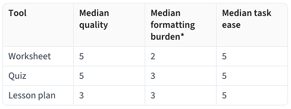
📷 Research findings'" />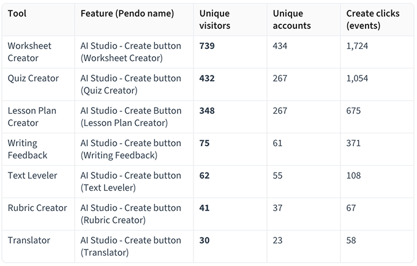
📷 Pendo usage data'" />Left: usability study results — worksheet creator scored highest with median quality 5/5 and formatting burden 2/5. Right: Pendo usage data from the beta period.
Worksheet creator was the strongest performer — median output quality 5/5, median formatting burden 2/5, meaning teachers could use it with minimal rework. Quiz creator received strong quality ratings but had a critical issue: answers appeared inline with questions, making outputs unusable as student-facing assessments without manual editing. That fix was already underway before BTS.
The study also surfaced what teachers wanted next: iterative refinement. The ability to edit, remix, or continue a conversation rather than regenerating from scratch. That finding became the next project.
"Compared to ChatGPT... I like this one. The output is quick, nice and high quality."
What I learned
Systems thinking is the only way to scale fast
Designing one reusable template instead of seven individual tools was the decision that made the timeline possible. Every hour I didn't spend reinventing the form layout was an hour I could spend on output formatting, edge cases, or feedback rounds.
Output quality is a design problem, not just an AI problem
How content is structured, labeled, and formatted directly affects whether teachers trust and use it. The answer key placement in the worksheet creator wasn't a small detail — it was the difference between a tool teachers would reach for and one they'd abandon.
Constraints create clarity
The iframe, the five-week timeline, the limited component library — all of these could have been blockers. Instead they forced better prioritization. I knew exactly what had to be perfect for launch and what could iterate later.
Staying close to engineering during QA is non-negotiable
With iframe constraints and a fast-moving build, design intent doesn't always survive translation to code. I caught issues during QA that would have shipped as bugs. That closeness mattered.
What's next
The most consistent feedback from teachers — across the usability study and in-product surveys — was that they wanted to keep the conversation going after generation. Edit a question. Make it harder. Add an open-ended prompt. Get a suggestion for what to create next.
I'm currently designing a conversational AI refinement layer that lets teachers iterate on outputs through chat. It's the most interaction-design-intensive work I've done on this project, and the first time I'm using Claude Code as an active tool in my design process — building interactive prototypes to test ideas faster than Figma alone allows.